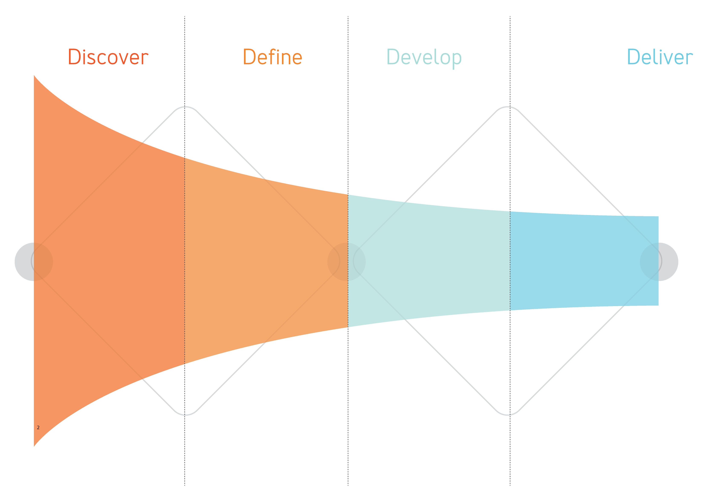

Our approach
Our process adapts the Design Council UK’s Double Diamond into what we call the Design Funnel — a model that reflects how design-led strategic work actually unfolds. We invest disproportionate energy in the early stages: understanding the situation, surfacing assumptions, and framing the right question.
The design funnel
Clarity is just the beginning. We design and develop actual solutions: new products, services, experiences, business models, and communication systems — either through our own practice or by activating our extended network of specialist collaborators.

Discover
Broad exploration. Research, observation, stakeholder engagement. All assumptions are open to challenge.
Define
Synthesis and framing. Discovery is sharpened into a clear articulation of the core challenge or opportunity.
Develop
Generating, prototyping, and testing potential solutions within the constraints established by the framing work.
Deliver
Refinement, implementation, and handover of products, services, strategies, and systems ready for the real world.
How we collaborate
Central to how we work is a co-creation mindset. We don’t deliver solutions from the outside — we build them with you. Every engagement is structured around six enabling conditions that make collaborative thinking productive.
Next step
The Clarity Session is a structured 120-minute strategic conversation. We map your situation, surface the real challenge, and identify the right next move. €180 + VAT — absorbed into any follow-on engagement.